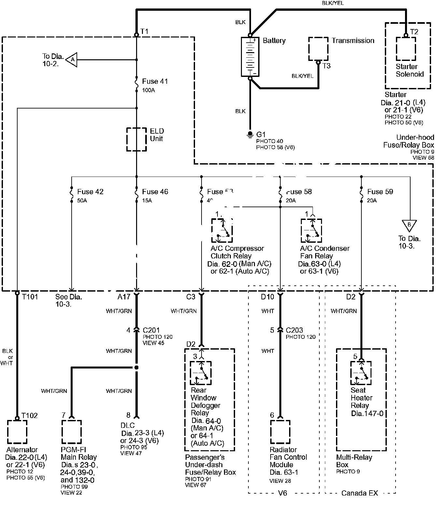

Power Distribution Schematics
Power Distribution SchematicsPower Distribution schematics show how power is supplied from the positive battery terminal to various circuits in the vehicle. Refer to the Power Distribution Diagram Set to get a more detailed understanding of how power is supplied to the circuit you're working on. Individual circuit schematics begin with a fuse.
So if Power Distribution shows that an inoperative circuit and another circuit share a fuse, check a component in the other circuit. If it works, you know the fuse is good and power is available to the inoperative circuit.
